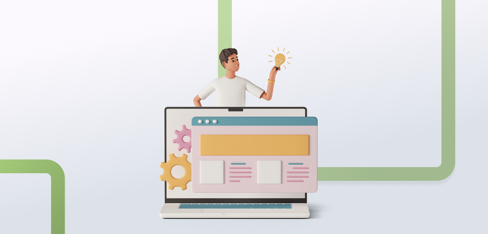
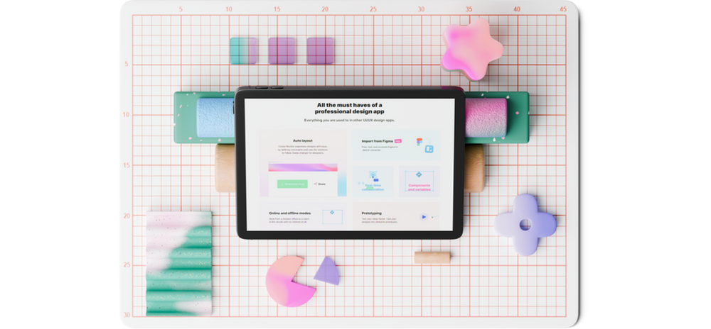

11 onmisbare stappen voor het creëren van een succesvolle app
W. Glasbergen · 4 jun 2024 · 5 minuten om te lezen

Het ontwikkelen van een maatwerk app is een complex proces dat veel meer omvat dan alleen het schrijven van code. Het vraagt een integrale aanpak waarin techniek, creativiteit en een diepgaand begrip van de gebruikerservaring (UX) naadloos samenkomen. In deze blogpost gaan we dieper in op alle stappen bij de ontwikkeling van een succesvolle maatwerk app.
01Idee
Elke app begint met een idee. Een brainwave, een probleem dat je persoonlijk raakt, een dagelijkse frustratie, een gat in de markt? Vaak past je idee in deze fase nog op een bierviltje, en daar ontstaan natuurlijk de beste ideeën. In deze fase verfijn je het idee en maak je het concept helder. Belangrijke vragen:
- Wat is het doel van de app?
- Voor wie is de app?
- Welk probleem lost de app op?
- Is een app het juiste middel om dit probleem op te lossen?
- Wat moet de app minimaal kunnen?
- Wat gaat de app ongeveer kosten?
02Markt- en concurrentieonderzoek
Voordat je begint, is marktonderzoek heel belangrijk. Het helpt je te begrijpen of er vraag is naar je app en wie je concurrenten zijn. Vaak blijkt dat iemand je voor was. Balen? Misschien niet. Het succes van een app hangt van veel meer factoren af, en het is zeker niet altijd de eerste die succesvol is. Laat je dus niet ontmoedigen door een paar hits in de app stores. Het kan altijd beter, of op zijn minst beter gepromoot. Analyseer vergelijkbare apps en identificeer hun sterke en zwakke punten.
03Businessmodel
Een kwalitatieve app ontwikkelen kost redelijk veel geld, laten we daar eerlijk over zijn. De hoofdvraag is dus: wie gaat dit betalen? Voor de meeste organisaties is een app een investering om geld mee te verdienen of kosten mee te besparen. Ga je abonnementskosten rekenen, een vast aankoopbedrag vragen, advertenties tonen of premium onderdelen verkopen? Denk onder meer na over:
- Hoeveel gebruikers verwacht je?
- Hoe intensief, en hoe lang, gebruiken ze de app?
- Wat is men bereid te betalen?
- Hoe hoog zijn de variabele kosten?
Organisaties met maatschappelijke doelen kunnen vaak subsidie krijgen om de kosten te dekken. Ook dan is het belangrijk vooraf de rekensom te maken: staat de investering in verhouding tot de impact die je wilt maken?
04Functionele specificaties en wireframing
In deze fase vertaal je je idee naar hoe het precies moet werken. Je beschrijft alle functionaliteiten, vaak in de vorm van user story maps. Daarnaast maak je wireframes: eenvoudige schetsen van de gebruikersinterface, zodat je ziet hoe de app eruit komt te zien en hoe gebruikers navigeren.
05Schermontwerp
Het schermontwerp speelt een grote rol in de gebruikerservaring. UI design (User Interface) en UX design (User Experience) zorgen ervoor dat de app niet alleen werkt, maar ook gebruiksvriendelijk en aantrekkelijk is. Hierbij ontwerp je ook de huisstijl van de app: kleuren, lettertypen, illustraties, iconen en grafische elementen.

06Technologie en tools
De juiste technologie en tools kiezen is een belangrijke stap. Vragen die hierbij spelen:
- Wat voor type app wordt het: Apple App Store, Google Play Store of een web app?
- Welke talen, frameworks en tools ga je gebruiken?
- De back-end: waar en hoe sla je data op, welke data, en zijn er koppelingen met systemen van derden?
07Ontwikkeling
Dan is het eindelijk tijd om te bouwen. Naast traditioneel programmeren kan dit tegenwoordig ook zeer goed met low-code tools zoals Flutterflow. Dit zijn visuele editors waarin weinig maatwerkcode nodig is voor een volwaardige app. Dat maakt de ontwikkeling vaak sneller en het resultaat betrouwbaarder. Een nadeel is dat je soms afhankelijk bent van de tooling, en dat de code niet altijd 100% geoptimaliseerd is, wat de performance iets kan verlagen.
08Testen
Testen zorgt ervoor dat de app vrij is van bugs en dat alle functionaliteiten correct werken. Er zijn verschillende soorten testen:
- Unit testing: testen van individuele componenten of modules
- Integration testing: testen van de samenwerking tussen modules
- User acceptance testing (UAT): testen door eindgebruikers of de app aan hun verwachtingen voldoet
- Performance testing: meten van snelheid, responsiviteit en stabiliteit
09Lancering
Na grondig testen is het tijd om te lanceren. Dit omvat onder meer het indienen van de app bij de Apple App Store en Google Play Store, of de deployment op een productieserver. Zorg ook voor een plan voor de eerste gebruikerssupport en eventuele bugfixes na de lancering.
10Onderhoud en updates
De lancering is niet het einde van de reis. Regelmatig onderhoud en updates houden de app soepel draaiend en voegen nieuwe functionaliteit toe. Gebruikersfeedback is daarbij van groot belang: het helpt de app voortdurend te verbeteren en relevant te houden.
11Marketing en gebruikersbetrokkenheid
Een succesvolle app heeft een sterke marketingstrategie nodig om gebruikers aan te trekken en te behouden. Denk aan:
- Social media marketing
- Content marketing (blogs, video's)
- Betaalde advertenties, zoals Google Ads
- E-mailmarketing
- Samenwerkingen en partnerships
Conclusie
Bij het ontwikkelen van een maatwerk app komt heel veel kijken. Het is een uitdagende onderneming die planning, samenwerking en doorzettingsvermogen vraagt. Door elke fase zorgvuldig uit te voeren en te focussen op de behoeften van je gebruikers, creëer je een app die niet alleen technisch solide is, maar ook echt waarde toevoegt voor je doelgroep.
Heb jij zelf een goed idee voor een app? Wij loodsen je graag door deze stappen om jouw idee tot leven te brengen. Wil je een eerste kostenindicatie? Bekijk dan wat een app kost.